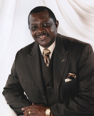
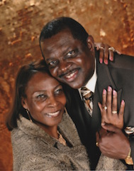

Pastor

Elder Dwight Morrisey was saved at the early age of 13. At age 16, he preached his initial sermon. Elder Morrisey was ordained and began pastoral work in September 1988. He has been the pastor of the Gospel Light United Holy Church of Mt. Olive, NC for the past 28 years and supervises 8 churches. Through his leadership, Gospel Light has gone through several building projects and spiritual transformations.
Elder Morrisey received his Bachelors degree in 1989 from Fayetteville State University, and a Masters Degree in 1991 from North Carolina Central University. Elder Morrisey believes in education and strives to impress upon all he meets the importance of education and doing your best. He graduated Cum Laude as an undergraduate student and Magna Cum Laude as a graduate student. He is a member of Kappa Delta Pi, a national honor society for educators, and a member of the Alpha Kappa Mu National Honor Society.
In 1998, Elder Morrisey was appointed by the President of the Southern District Convocation of the United Holy Church of America, Goldsboro, NC, Bishop Ralph E. Love, Sr. as a District Elder of the Clinton District, were he supervises nine churches.
In 2000, Elder Morrisey was elected by the members of the Clinton District Union as Second-Vice President and has  served his district well! Elder Morrisey is also the Chief Adjutant of the Southern District, and serves President Love and his administration with joy and gladness.
In 1999, Elder Morrisey was appointed to the Board of Trustees of the United Christian College and served until he was appointed as President of United Christian College in 2003. Under the leadership of Elder Morrisey, United Christian College has received recognition as a fully accredited Bible College for the past four years. United Christian College under Elder Morrisey’s vision has established extension schools in Jackson, NC, Richland, NC, Greenville, NC, Grifton, NC, and Burlington, NC. A new school is expected to open in Fayetteville and a new was opened in Durham, NC and has been in operation for the past year. Excitement and attendance continues to rise, as UCC grows daily.
Elder Morrisey was employed by Fayetteville State University as a Criminal Justice Instructor from 2003 to 2006. There he used his love for education and people as a tool to prepare young people for secular life while encouraging them to seek a personal relationship with the Lord. Before then he taught at Wayne Community College for seven years.